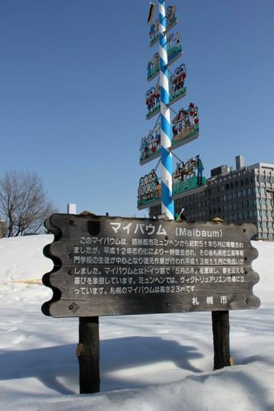

ミュンヘン
ミクラシュ・ヨハネス
１７日9月２０１５年 （木）
ミュンヘン

- バイエルン語： ミンガ
- 人口： １４０万人
- 日本人口： ３０００人
- 面積： ３１０平方キロ
- 創建： １１５８
川
ミュンヘンを川が二つ流れる
- イーザル川
- ヴュルム川
姉妹都市

ミュンヘンと札幌は姉妹都市だ。
第二次世界大戦
- 国家社会主義は結成される
- ダッハウ強制収容所
- 壊された建物
ノイシュヴァンシュタイン城
スタールンベルグ
きれいな自然
日本的な生活
- 毎年の7月は日本祭が行う
- 毎月は飲み会だ
- 店とレストーランが沢山ある
まとめ
- 白井の出身はミュンヘンだ
- ちょっと高いけど、いい所だ
- 行ってみてほしだ
ありがとうございます！